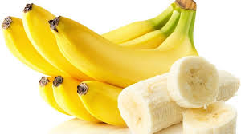

banana


-
Banana is extensively grown in tropical and subtropical countries. This fruit comes in various shapes and sizes. Eating this fruit helps with digestion of our food and relieves constipation. I like all foods that are made with bananas like cakes, ice creams, milkshakes, etc
- Bananas are some of the most widely eaten fruits in the world, as well as some of the most readily recognized due to their distinctive shape and bright colors which, added to the health benefits of bananas, makes them a household stable. They are nutritious and readily eaten raw, and are mostly composed of sugars, such as sucrose, fructose, and glucose, in addition to fiber. As a result, they are among the best choices for a source of energy that gives both immediate boost and more prolonged boosts. There are a number of additional benefits to bananas that have been discovered in recent years that may result in a higher quality of life for people of all ages and backgrounds. The mindful consumption of bananas help people live healthier and…show more content…
These short chain fatty acids, however, are helpful in that they are taken up by the cells that make up the stomach lining, which is called the mucosa. When these cells are healthy, they are then able to do a much better job of absorbing calcium into the body. Calcium, of course, is one of the building blocks of bones in both the young and the old, and a body rich in calcium will be a body with stronger bones that are less prone to fractures or decay.
Healthy Kidneys
Strong bones is an essential part of a healthy life, but these are not the only advantages that bananas confer to people who eat them regularly. The kidneys are another important part of the body that are positively impacted by regular banana consumption. Although people have two kidneys, the truth is that whenever one becomes damaged due to injury or unhealthy lifestyle habits such as excessive drinking, smoking, or weight gain, the other kidney will be affected too since they are part of the same blood supply and body.